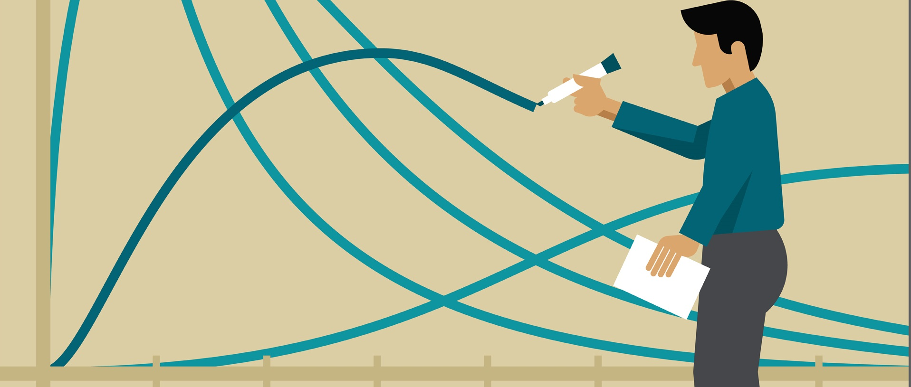

Statistics
The Applied Statistics & Analytics emphasis includes a greater number of analysis and data management courses and fewer of the mathematics courses required for graduate study in statistics. The Statistical Science emphasis is designed to better prepare students for graduate studies in statistics.
The new Data Science emphasis teaches students to solve problems in the field of big data science. Students will take R, SAS, and Big Data Science courses and electives in Python programming, financial economics, survey sampling, SQL, and more.
The Masters in Statistics offers an integrated Bachelors & Masters program which takes about 5 years to complete. This YouTube video has an overview of the program.
Learn more about the Data Science Club and the Mathematical Finance Club on the clubs page.